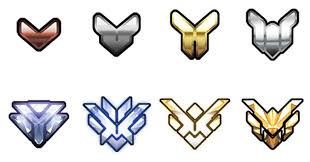

This game is a fps and has different classes that you can play as. There are four categories: Offense, Defense, Tank, and Support. These categories have different characters that you can play as. All characters have different abilities and have different advantages and disadvantages to bring to the team. There are four different categories to play the game. Quickplay, Competitive, Arcade, and Play against AI.
Quickplay is like competitive, although you are not winning for SR or playing to get competitive points. Instead you are playing to prep for competitve. The only thing that Quickplay and competitive have in common is that you cannot stack heros. Although in Quickplay, unlike competitive, the only way to win in payload is to cap all of the points. In compeitive you have to get push the payload farther than the enemy team. Also, like competitive, the way to win in King of the Hill is to have the cap until the end of the game, after at the top of your screen there will be circles. These circles show how many rounds you have won or the enemy has won.
Competitive is a gamemode where people are playing for competitive points and SR. This gamemode gives poeple rank which puts you with other people around your rank. This rank also gives you, at the end of the season, competitive points which gets you a golden gun. You get 10 competitive points every game you win. You need 3000 competitive points form a golden gun. Also with every game you play and win you get competitive points and you get SR. SR are points that increase or decrease, depending on win or lose, your rank. Now because of the rank system there are 8 different categories for rank. These categories give you different a amount of competitive points at the end of the season shown by the table below.
The play against AI mode is to basically train against AI on a team of players. The AI are very easy to kill and the AI don't really act like players would usually. They do use ultimates, shoot, and try to kill you as much as they can, although the AI is only to get used to the game and to train with abilities.
Training is a mode where you are by yourself against these bots that don't kill you. Around the map there will be bot that stand still, or move around in a track. These bots do respawn in the same place and then basically it is the same gamemode like Play Against AI. Although, these bots don't try to kill you and they aren't heroes that you can choose from.
| Rank Type | SR Amount | Competitive Points |
|---|---|---|
| Bronze | 1-1499 | 100 |
| Silver | 1500-1999 | 200 |
| Gold | 2000-2499 | 400 |
| Platinum | 2500-2999 | 800 |
| Diamond | 3000-3499 | 1200 |
| Master | 3500-3999 | 2000 |
| GrandMaster | 4000-5000 | 3000 |
| Top 500 | Top 500 In Region | 3000 |